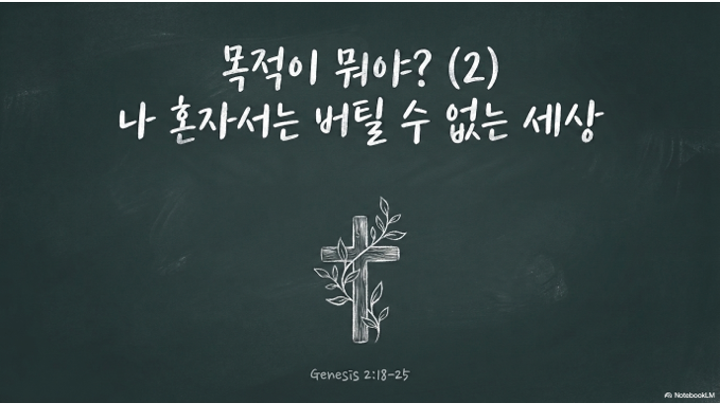

2026.08.02 주일 설교 묵상
목적이 뭐야2?
나 혼자서는 버틸 수 없는 세상 — 곁에 있는 사람을 다시 보게 되는 7일의 여정
주일 설교 다시보기
설교 요약: 우리는 혼자서는 이 험한 세상을 버텨낼 수 없는 연약한 존재입니다. 하나님은 그 연약함을 아시고 곁에서 짐을 나눌 사람을 붙여주셨습니다. 내 힘으로 다 하려는 통제권을 내려놓고, 조건이 아니라 끝까지 함께하는 언약의 마음으로 서로를 대할 때, 가면을 벗어도 부끄럽지 않은 진짜 공동체가 세워집니다.
주일 설교 슬라이드
1 / 12

좌우 화살표를 눌러 슬라이드를 넘겨보세요.
매일 이렇게 새로워지세요
- 정직한 인정: 오늘 혼자 다 해내려고 애쓰다 지친 순간이 있었는지 돌아봅니다.
- 말씀 읽기: 오늘 주어진 본문과 해설을 천천히 읽으며 주님의 음성을 듣습니다.
- 순종 하나: 마음에 주신 순종할 일을 미루지 않고, 오늘 안에 실제로 행합니다.
- 결단과 체크: 오늘의 결단을 기도로 올려드리고 묵상 완료 체크를 합니다.
요일별 묵상 여정
월요일
제목
성경구절